Fast submatch extraction¶
by Ulya Trofimovich
This article is an informal description of the novel algorithm used in re2c-1.0 to implement submatch extraction. It tries to explain what is it so complex about this seemingly simple problem, why re2c has such a strange interface, and how tags are related to the familiar capturing groups used by other regular expression engines.
Introduction¶
Regular expressions is a syntactic notation for describing sets. Usually it is assumed that these sets contain strings — sequences of characters over some fixed alphabet. This is known as the language interpretation of regular expressions. For example, denotes language 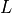 that contains all strings composed by a sequence of followed by a sequence of . Special symbol means “empty string”:
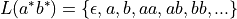
Regular expressions is one possible way of describing regular languages — the class of languages generated by Type 3 grammars in the Chomsky hierarchy. For every regular expression there is an equivalent Type 3 grammar that generates the same language and vice versa. For example, the above language can be generated by the grammar 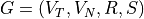:
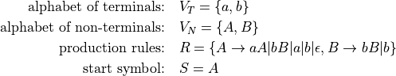
It is often said that regular expressions are used for matching strings. But what exactly is matching? In the narrow sense of the word it means recognition: deciding if the given string belongs to the language denoted by the regular expression. For example, 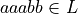, but 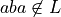. In the broad sense of the word matching means parsing: besides solving the membership problem it is also necessary to find the derivation — the sequence of grammar rules that transform start symbol into the input string. Derivation gives more information than a simple membership test because it reconstructs the structure of the input string. For example, 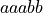 is derived as follows in the grammar :
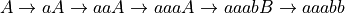
There is no exact analogue of “derivation” in terms of regular expressions, as their primary application is recognition, not parsing. Yet sometimes it is convenient to know which part of the input string corresponds to a particular part of the regular expression — the problem known as submatch extraction. In our example one might want to know the substrings corresponding to and 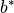; this is usually denoted with the help of capturing parentheses: 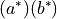. Submatch extraction is similar to parsing: in order to find submatch boundaries we need to know a bit of the input structure. However, unlike parsing, there is no need to reconstruct the full structure down to each character.
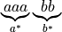
Recognition problem can be solved by converting the regular expression to a nondeterministic finite automaton (NFA) or an equivalent deterministic finite automaton (DFA). Parsing and submatch extraction are inherently more complex than recognition, and they require a more complex type of automata: nondeterministic finite state transducers (NFST). Unlike NFA, NFST are strictly more powerful than their deterministic analogues (DFST): it is possible to perform determinization, but the resulting automaton is of a more sophisticated type than DFST.
Recognition¶

aaaa

aaaa

aaaaa

aaaa

Recognition problem can be solved by converting the regular expression to a nondeterministic finite automaton (NFA) and simulating NFA moves on the input string. Simulation takes linear time, but since the automaton is nondeterministic, it is necessary to track many possible paths simultaneously. Alternatively, one can convert NFA to an equivalent deterministic finite automaton (DFA), which also runs in linear time, but is much faster then NFA — there is only one possible path to track. The determinization procedure is quite complex; in the worst case it may take exponential time and generate a very large DFA. Therefore determinization is only worthwile if it can be performed ahead of time (in lexer generators like re2c), or if the same regular expression is used multiple times. Some engines try to get the best of both worlds by using lazy determinization: NFA simulation with memoization of all intermediate states.
In terms of NFA “derivation” means “path”, and parsing means finding this path — a chain of transitions from initial state to final state which spells the input string. This cannot be done by the means of traditional NFA, as the only output they produce is a yes/no answer: simulation either ends in a final state or not. In order to remember the path automaton must be able to record its moves. Such automata are known as nondeterministic finite state transducers (NFST): they are like ordinary NFA extended with an output tape and transitions that not only read symbols from the input string, but also write symbols on the output tape. Unlike NFA, NFST cannot be always converted to DFST: nondeterminisitc transducers are strictly more powerful. However, it is possible to turn NFST into a more complex type of determinisitc automata. Devising and constructing such automata is the main challenge of parsing and submatch extraction.
The difficulty with DFA¶
Dangerous trailing contexts¶
The challenge of implementing submatch extraction in lexer generators like re2c is not immediately obvious.